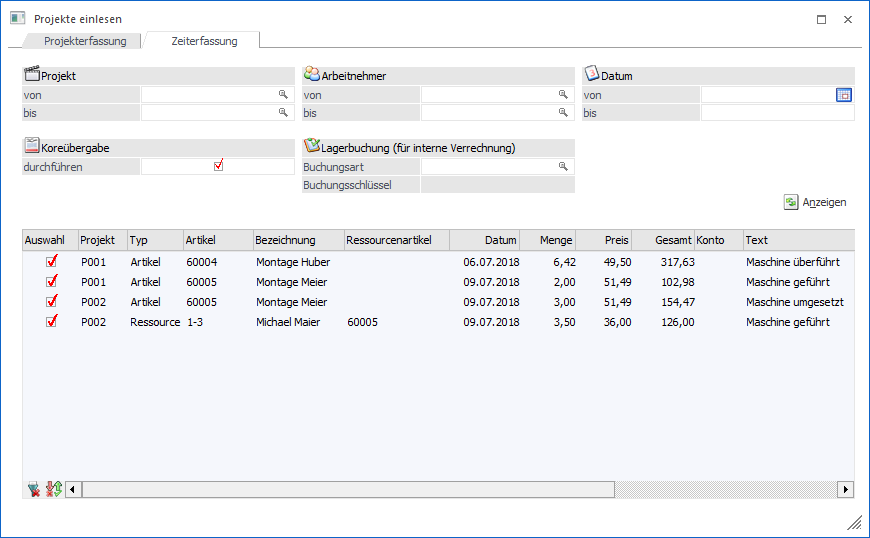
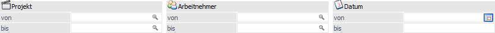
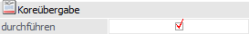
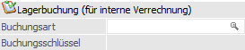
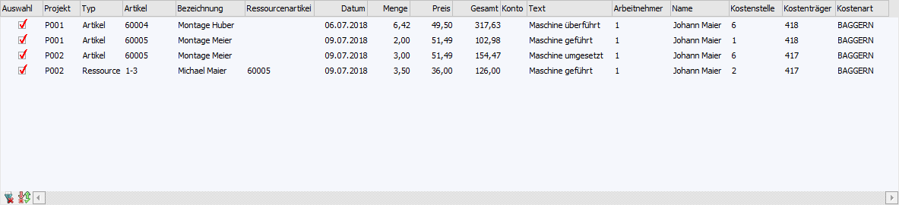
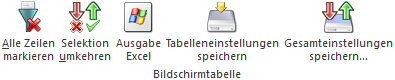

In dem Register "Zeiterfassung" können Erfassungszeilen aus der Zeiterfassung an die WinLine KORE übergeben bzw. Artikel vom Lager abgebucht werden.

Folgende Selektionen und Einstellungen stehen zur Verfügung:
Selektion

Ø Projekt von / bis
An dieser Stelle kann eine Einschränkung mit Hilfe der Projektnummer vorgenommen werden.
Ø Arbeitnehmer von / bis
Hier kann auf den Arbeitnehmer Zeiterfassungszeile selektiert werden.
Ø Datum von / bis
Mit Hilfe dieser Eingabefelder kann eine Selektion auf das Datum der Zeiterfassung vorgenommen werden.
Koreübergabe

Ø Koreübergabe durchführen
Durch Aktivierung der Option "Koreübergabe durchführen" können die ausgewählten Zeiterfassungszeilen direkt in die WinLine KORE übergeben werden.
Lagerbuchung (für interne Verrechnung)

Für alle Zeiterfassungszeilen können für Lagerbuchungen erzeugt werden.
Hinweis
Wenn bei Erstellung der Lagerbuchung (Bereich "Lagerbuchung (für interne Verrechnung)") ein Problem auftritt, so wird der entsprechende Hinweis unterhalb der Tabelle "Zeiterfassung" dargestellt.
Ø Buchungsart
An dieser Stelle wird die Lagerbuchungsart für die internen Istwerte eingegeben. Es sind hierbei nur Buchungsarten mit den Buchungsschlüsseln "Verkauf" oder "Produktion" erlaubt.
Hinweis
Wird keine Lagerbuchungsart angegeben, so könnten die Erfassungszeilen zwar übernommen, aber nicht vom Lager abgebucht, werden.
Ø Buchungsschlüssel
Hier wird der Buchungsschlüssel der gewählten Buchungsart angezeigt.
Anzeigen
Ø Anzeige
Durch Anwahl des Buttons "Anzeigen" wird die Tabelle "Zeiterfassungen" gemäß der zuvor getroffenen Selektion gefüllt.
Tabelle "Zeiterfassung"

In der Tabelle werden nach Anwahl des Buttons "Anzeigen" alle Zeiterfassungen, gemäß der zuvor getroffenen Selektion, angezeigt. Innerhalb der Tabelle stehen folgende Einstellungen zur Verfügung bzw. werden folgende Informationen angezeigt:
Ø Auswahl
An dieser Stelle kann entschieden werden, ob für die Erfassungszeile eine Koreübergabe oder eine Lagerbuchung erzeugt werden soll.
Ø Projekt / Typ / Artikel / Bezeichnung / Datum / Menge / Preis / Gesamt / Text / Arbeitnehmer / Name
In diesen Spalten werden die Daten der Projekterfassung ausgewiesen, wobei die Daten nicht editiert werden können.
Hinweis
Bei der Erstellung eine Korebuchung wird der "Text" in den Buchungssatz übergeben. Bei einer Lagerbuchung in das Textfeld der Buchungszeile.
Ø Ressourcenartikel
Handelt es sich bei der gewählten Zeile um eine Ressource, so kann hier ein Artikel eingetragen werden, mit dem die Verrechnung der Ressource in der Kore erfolgt soll.
Hinweis
Der Ressourcenartikel kann im Ressourcenstamm der Produktion hinterlegt werden und wird dann hier automatisch vorgeschlagen.
Ø Konto
Hier wird das Konto aus dem jeweiligen Projekt dargestellt und kann geändert werden. Sollte ein Beleg erstellt werden, so wird dieses Konto für diese Belegerzeugung verwendet.
Ø Kostenstelle / Kostenträger / Kostenart
An dieser Stelle werden die Daten der Kostenrechnung angezeigt und können editiert werden.
Tabellenbutton

Ø Alle Zeilen markieren
Mit Hilfe des Buttons "Alle Zeilen markieren" wird bei allen Erfassungszeilen die Option "Auswahl" aktiviert.
Ø Selektion umkehren
Durch Anwahl des Buttons "Selektion umkehren" werden die selektierten Zeiterfassungen deaktiviert und die nicht selektierten Erfassungen aktiviert.
Ø Ausgabe Excel
Durch Anwahl des Buttons "Ausgabe Excel" wird der Inhalt der Tabelle an Microsoft Excel übergeben.
Ø Tabelleneinstellungen speichern
Die Spalten einer Tabelle können grundsätzlich an beliebige Positionen verschoben, bzw. in der Breite entsprechend angepasst werden. Durch Anwahl des Buttons "Tabelleneinstellungen speichern" werden die Einstellungen benutzerspezifisch gespeichert und bei dem nächsten Aufruf des Programmpunktes wieder vorgeschlagen.
Ø Gesamteinstellungen speichern
Im Gegensatz zu "Tabelleneinstellungen speichern" können mit "Gesamteinstellungen speichern" mehrere Tabellenaufbauten gespeichert und nach Wunsch geladen werden. Zusätzlich werden Sonderfunktionen der Tabelle (z.B. "Spalte gruppieren") ebenfalls bei der Speicherung bedacht.